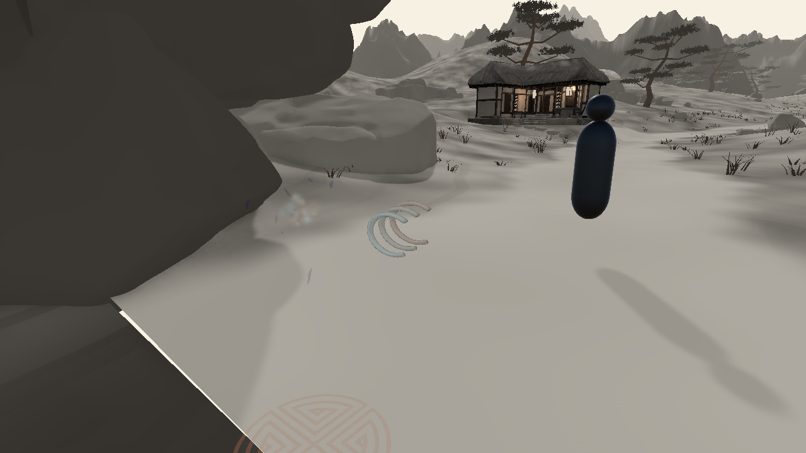

087 손 · 사용자 비주얼 검토 대기달아오른 침틀
큰 공전 고리를 작은 열린 금속 띠 세 개로 바꾼 시안입니다. 이번에는 이 술식 하나만 확인합니다.
발사부 주변의 형태·크기 시안입니다. 실제 손 소켓과 연속 시전 스택은 아직 연결되지 않았습니다. 비주얼은 사용자 의견을 받은 뒤 확정합니다.
짧은 재생
C2 기본 카메라 · 시작부터 소멸까지발사부 위치 확대 · 3.4초 효과
수정 전후
확대 이미지

기술 기록과 한계
띠 한 개 약 19×15cm, 524 tris를 공유하는 세 인스턴스. 본체·개수·크기·리본 수만 변경했습니다. KTP 발동 문양과 기존 수명은 유지했습니다.
진단용 카탈로그 재생이며 실제 플레이어 시전 영상은 아닙니다. 캡처 후 원래 C2 카메라로 복귀합니다. 이전 그림은 D3D12, 현재는 Editor 복구용 D3D11에서 촬영했습니다.
한 술식 실제 Update·소멸 기록 · 메시·변경 필드 기록 · 한 술식씩 진행하는 작업 방식
기존 전체 목록